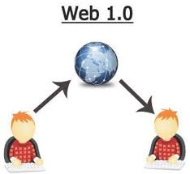

Atividade - ME 1
Aluno: Manuel Luan Santos Assis
A Web 1.0 é caracterizada pela sua função de passar informações para o usuário, de forma para que ele possa obter conhecimento do que aquele site oferece para ele.No entanto a Web 1.0 não permite com que o usuário possa interagir com o conteúdo do site. Nesse critério, a Web 1.0, no início foi pautada por apresentar sites somente para informações tendo sites fechados, somente programadores alvos na época poderiam ter acesso e se interagir com o site. Logo ,os programadores poderiam a qualquer momento alterar o site como desejar, as informações contidas nos sites .Cada vez que alguém acessar o site , por exemplo, no dia seguinte aquelas informações são novas ou não são as mesmas. Empresas tecnológicas desenvolvem aplicativos de software que o usuário pode baixar, mas não podem ver como ele funciona .Demonstrando como em uma época daquelas os visitantes não podiam interagir e ter acesso ao site como nos tempos de hoje. Em comparação com a Web 1.0 e a Web 2.0 não é muito difícil, já que a Web 2.0 é mais interativa e permite algumas alterações no site pelo usuário. Sendo assim, a web 1.0 é mais fechada, sem interação alguma com a pessoa que ao clicar no site acessa, somente ver as informações , sem nenhuma modificação queria fazer, essas informações dadas podem permitir que possam consultar
Link da Evolução 1.0
https://www.trabalhosfeitos.com/ensaios/Web-1-0-e-Suas-Caracteristicas/64479292.html 